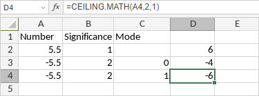

CEILING.MATH funkcija
Funkcija CEILING.MATH je jedna od matematičkih i trigonometrijskih funkcija. Koristi se za zaokruživanje broja naviše na najbliži ceo broj ili na najbliži višekratnik značaja.
Sintaksa
CEILING.MATH(number, [significance], [mode])
Funkcija CEILING.MATH ima sledeće argumente:
| Argument | Opis |
|---|---|
| number | Broj koji želite da zaokružite naviše. |
| significance | Višekratnik značaja na koji želite da zaokružite naviše. Ovo je opcioni parametar. Ako se izostavi, koristi se podrazumevana vrednost 1. |
| mode | Određuje da li se negativni brojevi zaokružuju ka nuli ili od nule. Ovo je opcioni parametar koji ne utiče na pozitivne brojeve. Ako se izostavi ili postavi na 0, negativni brojevi se zaokružuju ka nuli. Ako se navede bilo koja druga numerička vrednost, negativni brojevi se zaokružuju od nule. |
Napomene
Kako primeniti funkciju CEILING.MATH.
Primeri
Slika ispod prikazuje rezultat koji vraća funkcija CEILING.MATH.
